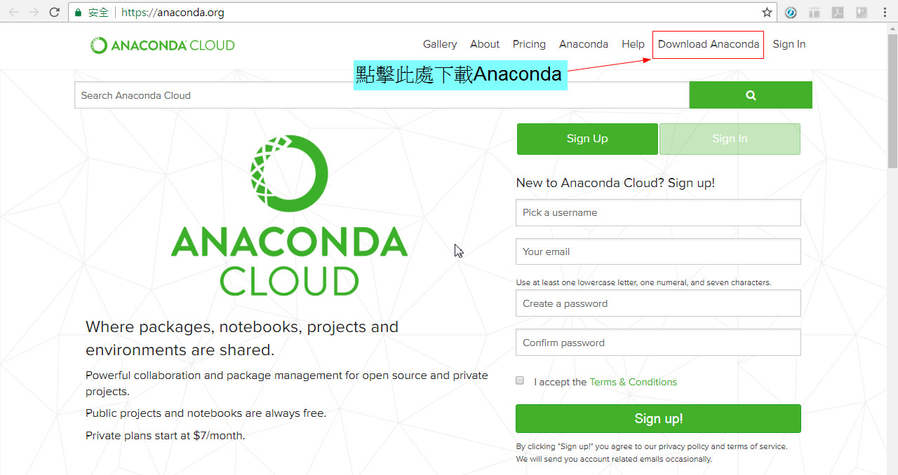
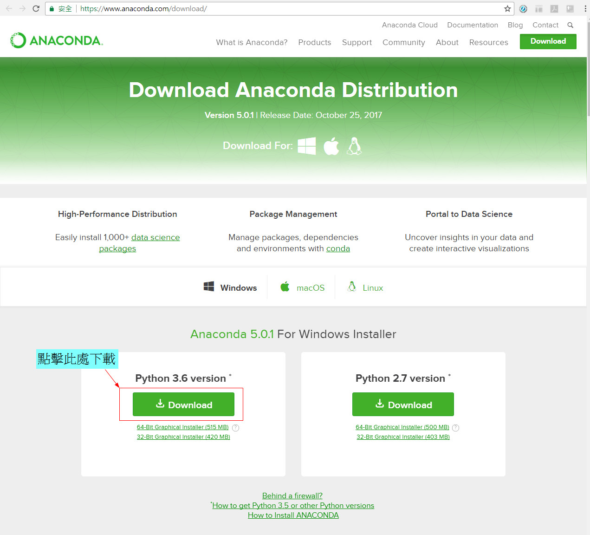
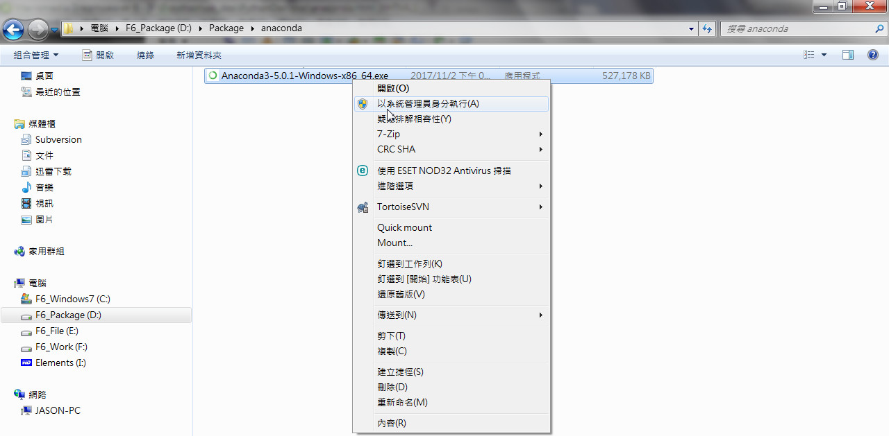
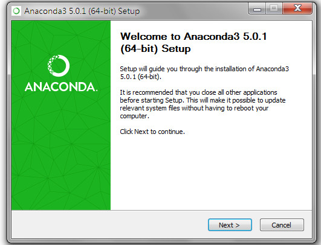
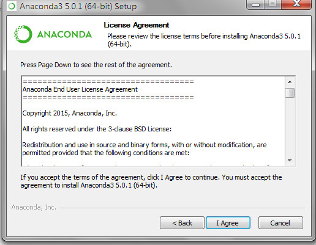
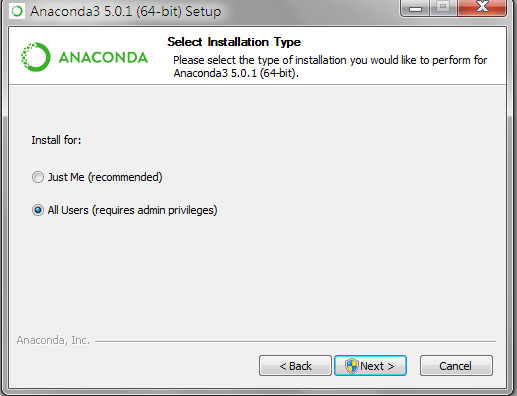
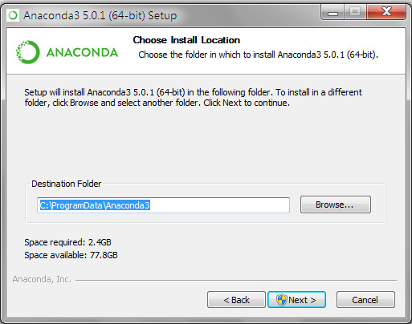
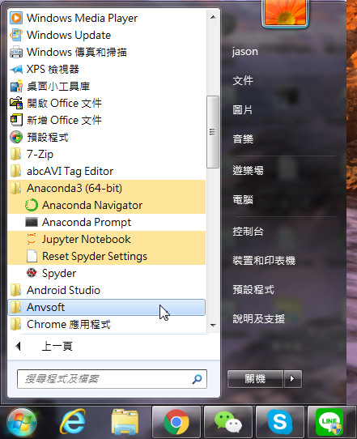

1.Anaconda下載網址:https://anaconda.org/
2.點擊Download Anaconda:

3.選擇支援Python3.6的Anaconda:

4.下載完成，以系統管理員身分執行Anaconda3-5.0.1-Windows-x86_64.exe:

5.Next:

6.I Agree:

7.Next:

8.Next:

9.完成後，點擊 開始 按鈕，查看所有程式，會看到如下圖所示之 Anaconda3(64-bit)
